2026년 1학기의 마지막을 기념하는 종강다회
새로운 한해가 시작되고 벌써 절반이 지났습니다.
한 학기도 이제 끝나가고 여름이 다가오고 있네요.
이처럼 뜻깊은 시기에 한 학기를 마무리하는 종강다회로
여러분과 함께 모일 수 있게 되어 무척 기쁩니다.
여러분 모두 바쁘신 와중에 시간내어 자리해주셔서 정말 감사드립니다.
또한 오늘 특별히 장소를 마련해주신 예평 사장님께도 감사하다는 인사를 드리고 싶습니다.
덕분에 정말 뜻 깊은 시간을 보낼 수 있게 되었습니다.
지난 한학기 동안 최선을 다한 만큼, 오늘 하루 만큼은 모든걸 내려놓고 마음껏 즐기셨으면 좋겠습니다!
모두를 위해 좋은 차들이 다양하게 준비된 만큼
다들 편안하게 즐기는 시간이 되시길 바랍니다!
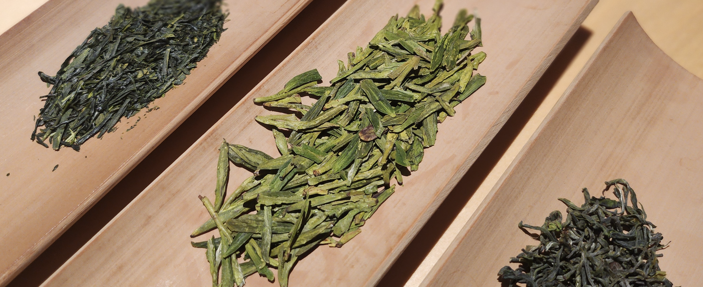
즐거운 다회를 위한 유의사항
언제든지 필요한 것이 있으시다면 주변의 운영진을 찾아주시면 언제든 기쁜 마음으로 도와드립니다.
뜨거운 물을 조심해주세요!
깨지기 쉬운 다구들에 주의해주세요!
항상 신경써서 조심스럽게 다뤄주세요.
차는 즐거운 마음으로 마실 때 가장 맛있습니다!
좋은 사람들과 웃으며 즐기는 차가 제일 맛있습니다!
항상 가볍고 즐거운 마음으로 즐겨주세요.
위스키 캐스크 홍오룡 26春
위스키 통에서 쿨쿨 잔 홍오룡
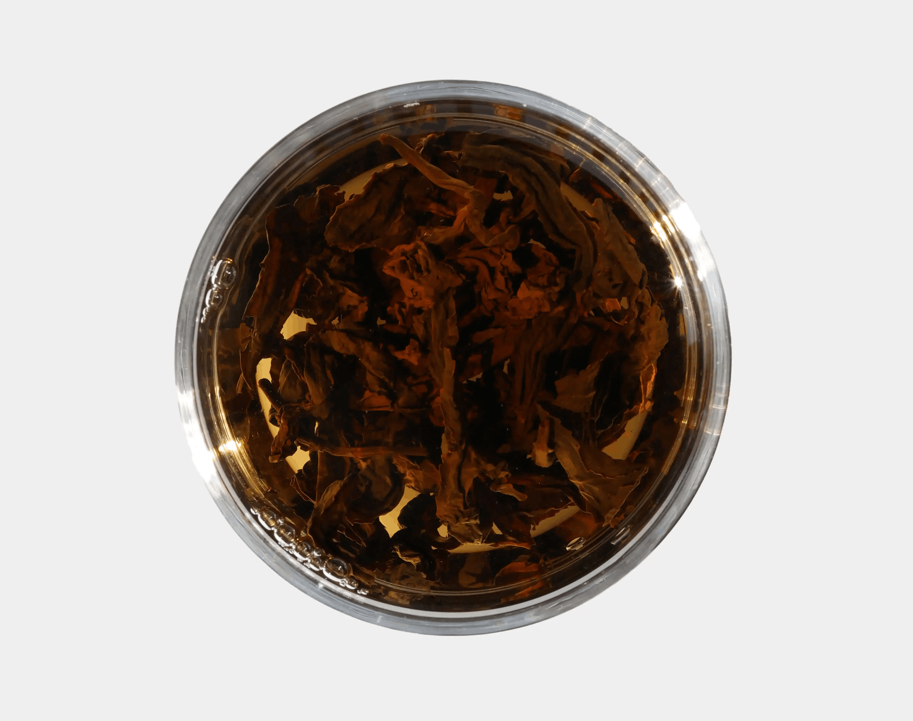
술의 향긋함을 즐기시는 분들과 알코올을 멀리하시는 분들 모두가 즐기시기 좋습니다.
봄 사계춘 차청으로 만들어 산뜻한 느낌이 매력적입니다.
산뜻한 차와 오크통의 향이 이루는 조화에 집중해보세요.
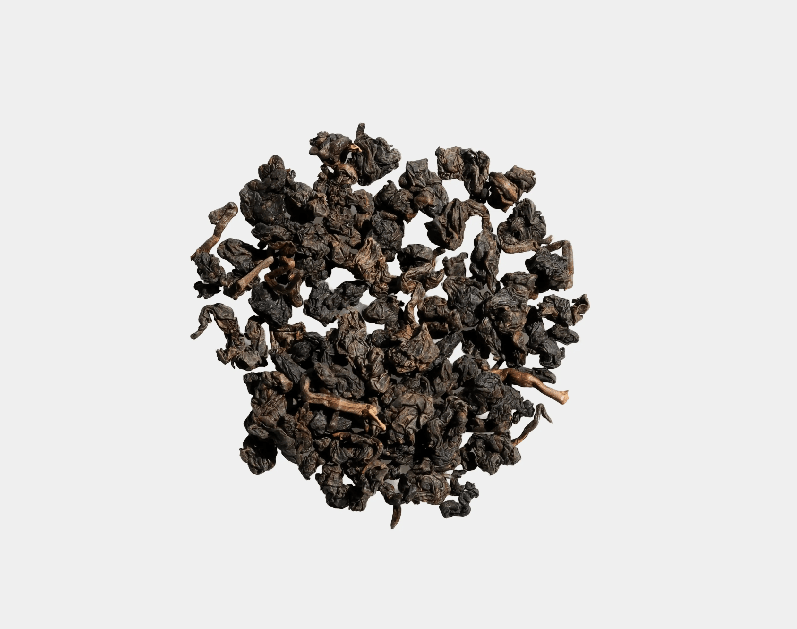
‘산뜻함과 묵직한 향의 조화’
인위적인 가향이 아닌 실제 위스키 숙성에 사용되는 오크통에 찻잎을 넣어 향을 입혔습니다. 홍오룡 찻잎 본연의 푸룬, 포도, 석류와 같은 과일 향들이 오크통 숙성으로 더 한층 더 묵직해졌습니다. 과일향과 잘 어우러지는 묵직한 초콜릿과 위스키향을 느껴보세요.

뜨거운 온도로 우려도 좋지만 향을 독특한 향을 즐기기 위해서 온도를 살짝 낮춰서 천천히 오랫동안 우려드시거나 냉침하여 시원하게 즐기셔도 좋습니다.
봉황단총 노총 밀란향
봉황산의 기운을 담은 우롱차
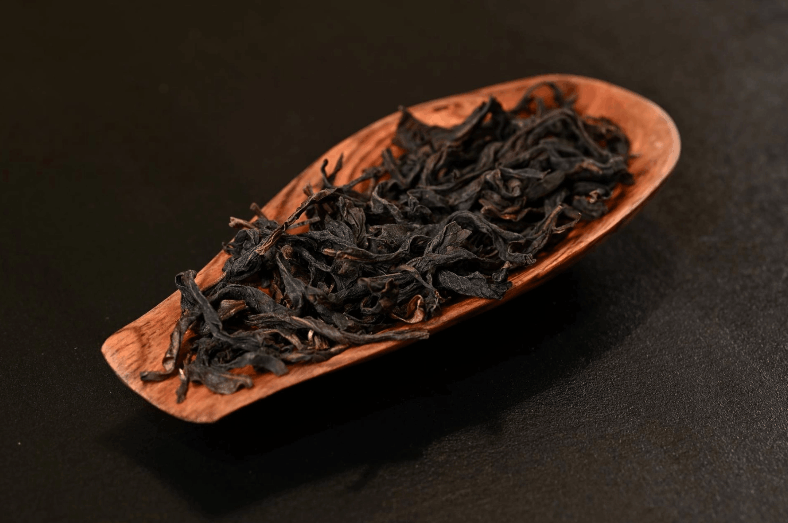
봉황산에서 자라는 차나무는 나무마다 내뿜는 향기가 다르기에,
이 특징을 살리고자 한그루씩 개별적으로 차를 만들어 단총이라는 이름이 붙게되었습니다.
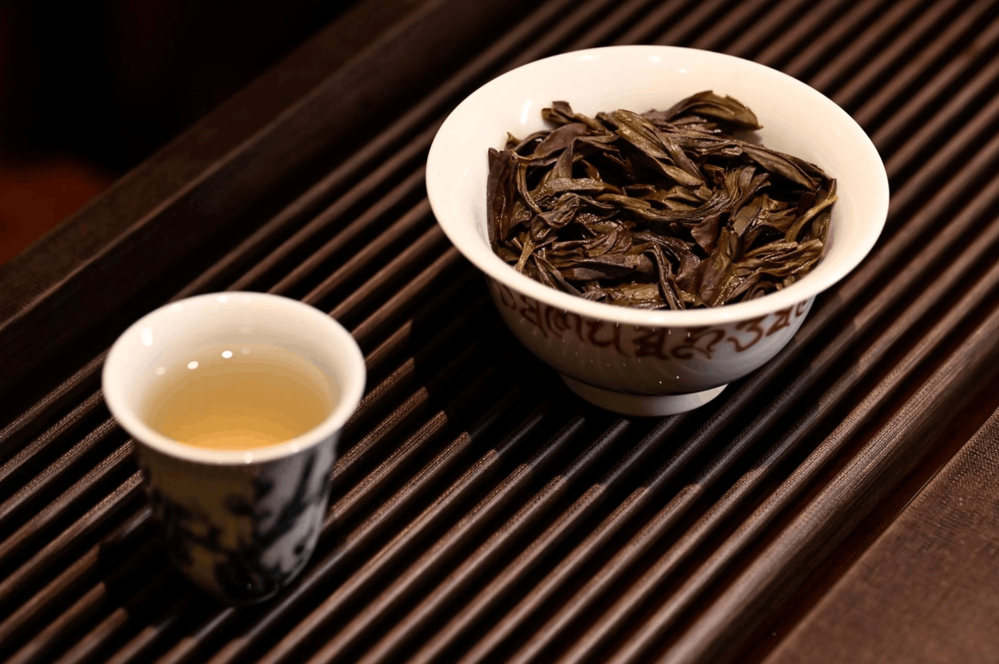
‘달콤하고 깊은 꿀향’
봉황단총은 나무에 따라 향기의 종류가 다양합니다. 이러한 향기에 따라 봉황단총의 이름이 붙여집니다. 밀란향은 꿀향이 가득한 달콤한 향기를 가진 경우 붙여지며 이중에서도 ‘노총밀란향’은 해발 고도 800m 경에서 만들어진 차에 붙여집니다.
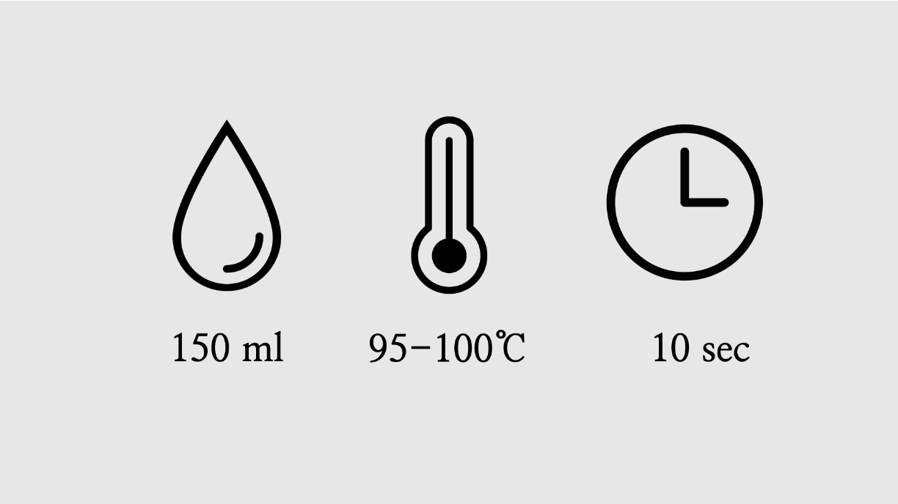
노총 밀란의 짙은 꿀향을 느끼기 위해서 너무 높은 온도의 물을 사용하는 것은 피해주세요. 차를 빠르게 우리고 이때 느낄 수 있는 깊은 향을 즐겨보세요.
만수가 만든 차, 백우롱
야생 암차 밭에서 자라고 장인의 손길이 더해진 차
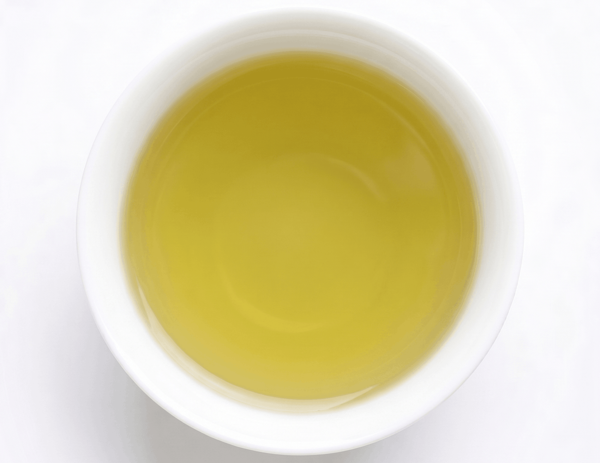
화개 지역에서 나는 차는 부드러운 질감과 상쾌하고 자연스러운 단맛이 특징입니다.
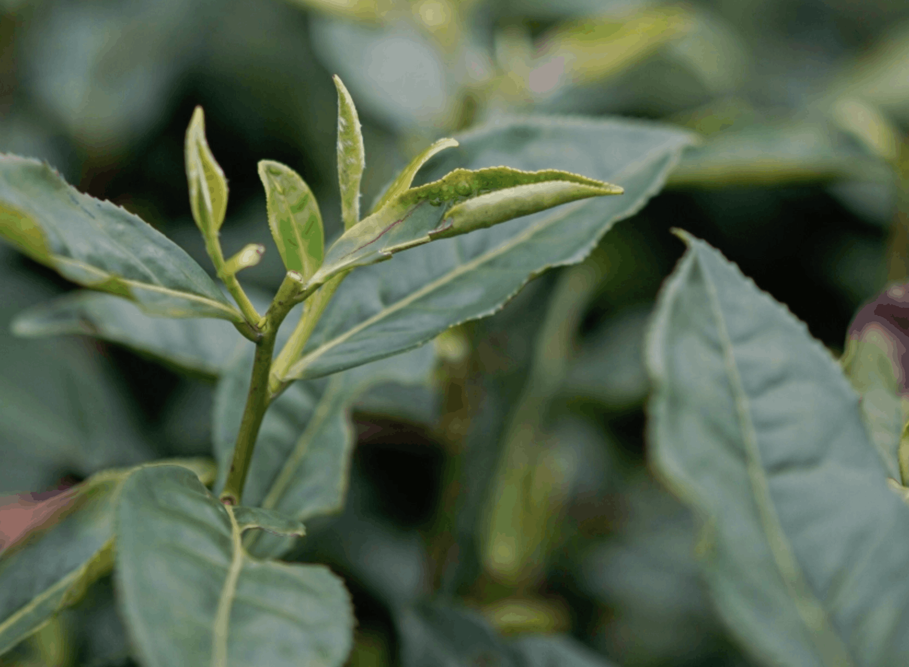
'은은한 발효향의 균형'
우전 다음으로 채취되는 세작 잎에 가벼운 흔들림과 산화 과정을 향의 입체감을 끌어냈습니다. 잎이 가진 자연스러운 향을 중심으로 은은한 발효향이 얹힌 균형감 있는 차입니다.
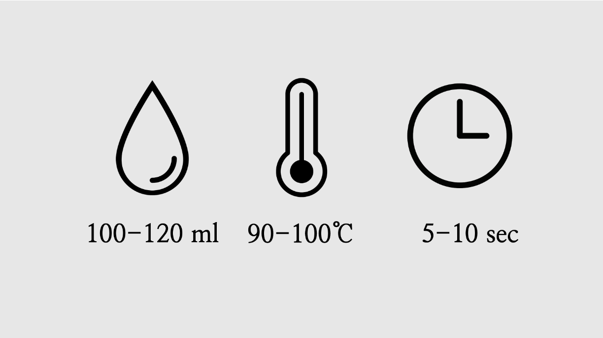
너무 높은 온도에서 차를 우리지 않도록 주의해주세요. 차의 은은한 향을 느끼기 위해서는 차를 우린 직후 뜨거울 때에 차를 드셔보세요. 지나치게 오랜 시간동안 너무 뜨거운 물로 우려 잎이 익지 않도록 주의해주세요.
봉암산 용산사지
한국 전통의 차 문화를 담은 덩이차

무쇠솥에 저온으로 덖어 햇빛에 건조하여 만들어진 차입니다.
건조 후 오랜 시간 항아리에서 숙성되며 특유의 신비롭고 독특한 향을 만들었습니다.
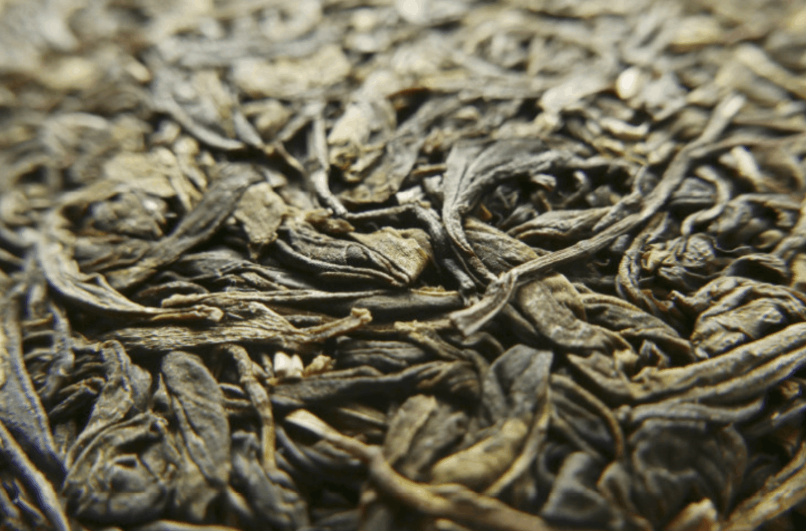
'시간에 따라 달라지는 향'
병차로 만들어져 항아리 속에서 시간이 지날수록 차의 향미에 변화가 생깁니다. 우림 횟수가 늘어나도 균일하게 나오는 맛과 향기로 내포성이 좋습니다. 마시고 난 뒤에는 맑고 투명한 느낌을 줍니다.

여러번 우려도 향과 맛이 균일하기 때문에 부담없이 계속 우려드셔도 좋습니다. 지나치게 오랜 시간동안 너무 뜨거운 물로 우려 잎이 익지 않도록 주의해주세요.
전수공 노수 금훤
일출을 보며 산을 오른 정성 끝에 얻은 차
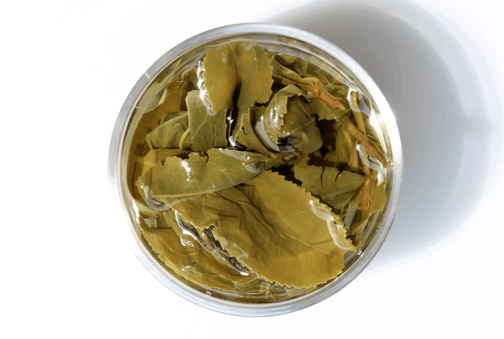
자연의 방식을 추구하는 다원인 만큼 생산량도 적고 많은 정성이 필요합니다.
이렇게 귀하게 얻어진 차인 만큼 특별한 향을 느낄 수 있게 해주는 차입니다.
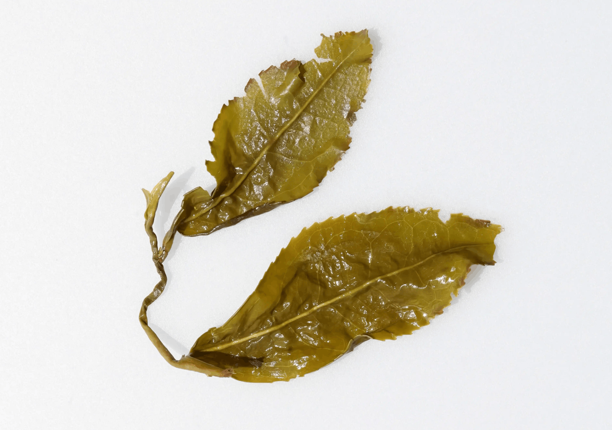
무난함이 주는 부드러운 매력
독특한 향이 개성적으로 느껴지거나 빼어난 향이 있지는 않지만, 그런 향들보다 편안하고 깊은 향이 촘촘하게 모여있습니다. 이런 무난한 평범함이 부드러운 매력을 느낄 수 있게 해줍니다. 이런 매력 덕분에 계속 우려 먹어도 질리지 않습니다.

물 온도는 가능한 뜨거운 것이 좋습니다. 차의 양은 조금 적게 넣어 찻잎이 충분히 펼쳐질 수 있게 한다면 더욱 즐기기 좋습니다.